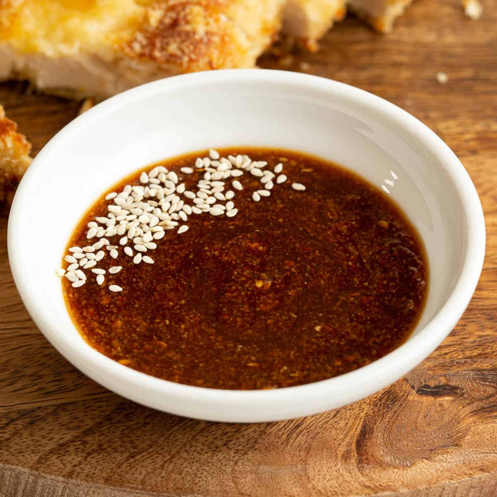

Tonkatsu Sauce

Description
Tonkatsu sauce is generally served with the Japanese dish tonkatsu. However, it is a tasty sauce on its own that can be used for other dishes.
Ingredients
- (Optional) 1 tbsp Sesame seeds
- 1 tbsp worcestershire sauce
- 1/2 tbsp soy sauce
- 1 tbsp tomato sauce/ketchup
- 1/2 tbsp brown sugar
Steps
- (Optional) Roast sesame seeds on low heat for a few minutes.
- Add all ingredients to a small bowl and mix untill completely incorperated.